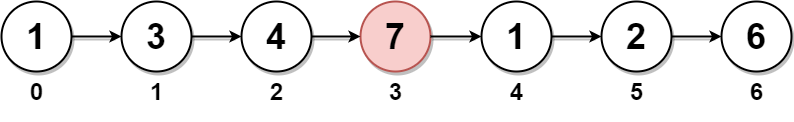

| Category | Difficulty | Likes | Dislikes |
|---|---|---|---|
| Algorithms | Medium | 4819 | 104 |
google | goldman-sachs | facebook | tcs | amazon | bloomberg
You are given the head of a linked list. Delete the middle node, and return the head of the modified linked list.
The middle node of a linked list of size n is the ⌊n / 2⌋th node from the start using 0-based indexing, where ⌊x⌋ denotes the largest integer less than or equal to x.
n = 1, 2, 3, 4, and 5, the middle nodes are 0, 1, 1, 2, and 2, respectively.
Example 1:

Input: head = [1,3,4,7,1,2,6]
Output: [1,3,4,1,2,6]
Explanation:
The above figure represents the given linked list. The indices of the nodes are written below.
Since n = 7, node 3 with value 7 is the middle node, which is marked in red.
We return the new list after removing this node. Example 2:
Input: head = [1,2,3,4]
Output: [1,2,4]
Explanation:
The above figure represents the given linked list.
For n = 4, node 2 with value 3 is the middle node, which is marked in red.Example 3:
Input: head = [2,1]
Output: [2]
Explanation:
The above figure represents the given linked list.
For n = 2, node 1 with value 1 is the middle node, which is marked in red.
Node 0 with value 2 is the only node remaining after removing node 1.
Constraints:
[1, 105].1 <= Node.val <= 105